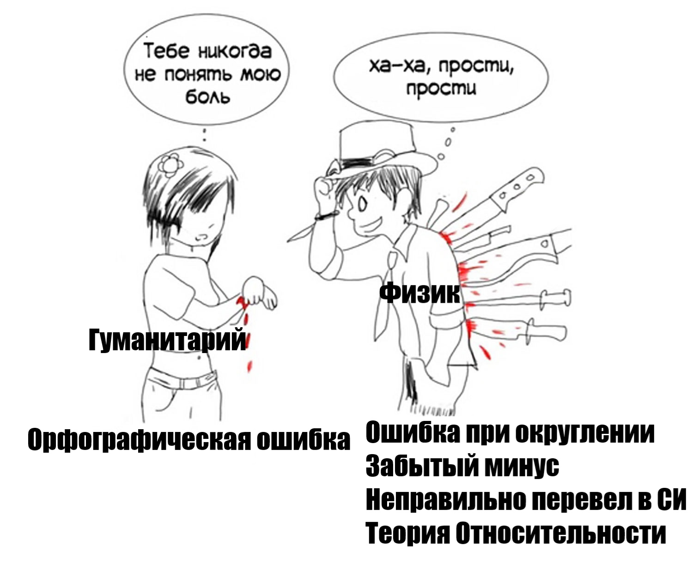

Известны скорость и время. Найти расстояние
Расстояние между городами А и В равно 435 км. Из города А в город В со скоростью 60 км/ч выехал первый автомобиль, а через час после этого навстречу ему из города В выехал со скоростью 65 км/ч второй автомобиль. На каком расстоянии от города А автомобили встретятся?
Через час после выезда первого автомобиля расстояние между автомобилями стало равно 435-60 = 375 (км), поэтому автомобили встретятся через время t=375/(60+65)=3. Таким образом, до момента встречи первый автомобиль будет находиться в пути 4 часа и проедет 60 · 4 = 240 (км).
Рассмотрим два объекта, один из которых догоняет другой, с указанными на рисунке скоростями.
Видим, что расстояние между объектами сократилось на 15 – 10 = 5 метров. Т.е. объекты сближаются со скоростью, равной разности их скоростей. Значит, время, за которое первый объект догонит другой, или время их встречи равно 20 мин.
Два пешехода отправляются в одном направлении одновременно из одного и того же места на прогулку по аллее парка. Скорость первого на 1,5 км/ч больше скорости второго. Через сколько минут расстояние между пешеходами станет равным 300 метрам?
Время t в часах, за которое расстояние между пешеходами станет равным 300 метрам, т. е. 0,3 км, находим по формуле t=0.3/15 = 0.2 часа = 12 минут
Допустим, из точки A и из точки B навстречу друг другу выехали две машины. Скорость одной машины – 60 км/ч, а скорость 2 машины – 40 км/ч. Они встретились через 1,2 часа. Какое расстояние между пунктами A и B
